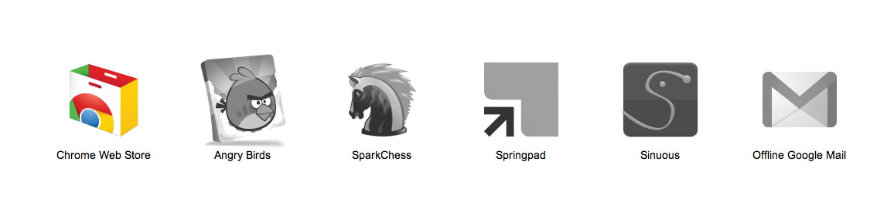

Offline
As your world used to be
-
As your world used to be
-
localStorage for simple key-value storage
if (!localStorage.getItem("checkins")) {
localStorage.setItem("checkins", JSON.stringify([]));
}
Easy API
setItem() getItem() removeItem() clear()
window.sessionStorage
Solution:
var userstr = JSON.stringify({
user: 'john',
id: 10
});
localStorage.setItem('user', userstr);
var user = JSON.parse(localStorage.getItem('user'));
http://example.com:80/
\ \ \_ port
\ \_ domain
\_ scheme
document.querySelector('#ta').addEventListener('keyup', function(e) {
localStorage.setItem('value', this.value);
localStorage.setItem('timestamp', (new Date()).getTime());
}, false);
Currently only Chrome and Firefox have implemented IndexedDB, however, the major browser vendors have indicated an intention to support it.
Today, it's supported via vendor prefixes. Let's simplify this:
window.indexedDB =
window.indexedDB ||
window.webkitIndexedDB ||
window.mozIndexedDB;
Retrieving by key ( indexes ):
// db.createObjectStore("Friend", "id", true);
db.createIndex("FriendNames", "name", false);
var index = db.openIndex('FriendNames');
var id = index.get('Eric');
Querying ( cursors ):
// Restrict to names beginning A-E
var range = new KeyRange.bound('A', 'E');
var cursor = index.openObjectCursor(range);
while (cursor.continue()) {
console.log(cursor.value.name);
}
var idbRequest = window.indexedDB.open('Database Name');
idbRequest.onsuccess = function(event) {
var db = event.srcElement.result;
var transaction = db.transaction([], IDBTransaction.READ_ONLY);
var curRequest = transaction.objectStore('ObjectStore Name').openCursor();
curRequest.onsuccess = ...;
};
<html manifest="example.appcache">... </html>
CACHE MANIFEST # 2010-11-17-v0.0.1 # Explicitly cached entries CACHE: index.html stylesheet.css images/logo.png # static.html will be served if the user is offline FALLBACK: / /static.html # Resources that require the user to be online. NETWORK: *
text/cache-manifest
applicationCache.addEventListener('updateready', function(e){
if (applicationCache.status ==
applicationCache.UPDATEREADY){
if (confirm('Load new content?')) {
...
}
}
});
window.requestFileSystem( TEMPORARY, // persistent vs. temporary storage 1024 * 1024, // size (bytes) of needed space initFs, // success callback opt_errorHandler // opt. error callback, denial of access );
blob: )data: )filesystem: ) Newvar img = document.createElement('img');
// filesystem:http://example.com/temporary/myfile.png
img.src = fileEntry.toURL();
document.body.appendChild(img);
Retrieve a file by its filesystem URL:
window.resolveLocalFileSystemURL(img.src, function(fileEntry) { ... });
function initFs(fs) {
fs.root.getFile('logFile.txt', {create: true}, function(fileEntry) {
// fileEntry.isFile == true
// fileEntry.name == 'logFile.txt'
// fileEntry.fullPath == '/logFile.txt'
// Get a File obj
fileEntry.file(function(file) { ... }, errorHandler);
// fileEntry.remove(function() {}, errorHandler);
// fileEntry.moveTo(...);
// fileEntry.copyTo(...);
// fileEntry.getParent(function(dirEntry) {}, errorHandler);
}, errorHandler);
}
document.querySelector('#terminal').ondrop = function(e) {
var files = e.dataTransfer.files;
window.requestFileSystem(window.TEMPORARY, 1024*1024, function(fs) {
Array.prototype.slice.call(files || [], 0).forEach(function(file, i) {
fs.root.getFile(file.name, {create: true, exclusive: true}, function(fileEntry) {
fileEntry.createWriter(function(fileWriter) {
fileWriter.write(f); // Note: write() can take a File | Blob.
}, errorHandler);
}, errorHandler);
});
}, errorHandler);
};
A Shared Worker can:
navigator.onLine - know when you're all aloneif (navigator.onLine) {
console.log('ONLINE!');
} else {
console.log('Connection flaky');
}
window.addEventListener('online', function(e) {
// Re-sync data with server.
}, false);
window.addEventListener('offline', function(e) {
// Queue up events for server.
}, false);
"Google and Bing break up their JavaScript and CSS into smaller blocks and save them in localStorage on mobile devices. Simultaneously they set a cookie so that the server knows not to send that payload on subsequent searches, a savings of 150-170 kB before gzipping."
App cache & localStorage survey - Steve Souders
| Website | Web App with manifest | |
|---|---|---|
| localStorage | 2.5Mb/5Mb | 2.5Mb/5Mb |
| sessionStorage | Unlimited | Unlimited |
| IndexedDB | 5Mb | Unlimited |
| App Cache | 5Mb | Unlimited |
| WebSQL | 5Mb | Unlimited |
| File System API | 5Mb | Unlimited |
// Request Status
webkitStorageInfo.queryUsageAndQuota(
webkitStorageInfo.TEMPORARY, // or PERSISTENT
usageCallback,
errorCallback);
// Request Quota
webkitStorageInfo.requestQuota(
webkitStorageInfo.TEMPORARY, // or PERSISTENT
quotaCallback,
errorCallback);
 |
 |
 |

|  |
|
|---|---|---|---|---|---|
| Web Storage | Y | Y | Y | Y | Y (8+) |
| IndexedDB | Y | N | Y | N | N |
| WebSQL | N | Y | Y | Y | N |
| App Cache | Y | Y | Y | Y | N |
| File System API | N | N | Y | N | N |
|
|
| |||
|---|---|---|---|---|---|
| Web Storage | Y | Y | Y (2+) | Y | Y |
| IndexedDB | Y | N | N | N | N |
| WebSQL | N | Y | Y (2+) | Y | N |
| App Cache | Y | Y | Y (2.1+) | Y | N |
| File System API | N | N | Y (3+) | N | N |
For most apps, you can get them packaged up for distribution in a matter of a minute or two. Just go to appmator.appspot.com!
Because we're using the application cache, you may want to request the "unlimitedStorage" permission. Just paste it in manually to the manifest.json file.
{
"name": "Great App Name",
"description": "Pithy description",
"version": "0.0.0.1",
"icons": {
"128": "icon_128.png"
},
permissions : [ "unlimitedStorage" ],
"offline_enabled": true,
"app": {
...
}
}

Web Storage (LocalStorage and SessionStorage)
Questions?